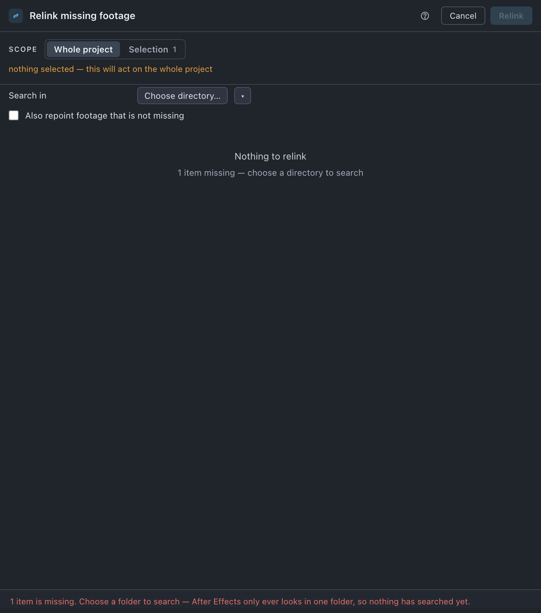

Relink
Searches a whole directory tree for missing footage and reconnects it — and, when you ask, repoints footage that is not missing.
Use it when
- The project opens with colour bars and a list of missing files, and they are somewhere under a directory you can name.
- A plates directory was moved or renamed and took a few hundred items with it.
- You have two copies of a project on one machine and want one of them to own the media, so the other copy can be deleted.
- You copied a job to a laptop and the footage came with it, but not at the same path.
What it does
Walks the directory you choose, top to bottom, indexing filenames as it goes, then matches the missing files against what it found and repoints the items. After Effects only ever sweeps one folder; this walks a tree. It matches files, not items — eighteen missing items can be four files, fourteen of them one layer set sharing a single .ai — so it answers once per file and fans the answer back out. Sequences are relinked as sequences, and a missing .psd layer is relinked layer-preserving rather than merged back into the whole file. Nothing is copied, moved or deleted; only the reference changes.
What it does not do: it never guesses. Where two candidates are equally plausible it reports the tie and leaves the file alone, because relinking to the wrong one changes a render and nothing downstream would catch it.
Do it
- Press Search in and choose a directory, or take one from the
▾menu of saved and recent directories. - Press Search. Choosing a directory does not start the walk — this button does. While it runs, the button reads Stop and the progress line under it counts directories and files.
- When it finishes, the line reads the number of names matched, the files searched and how long it took. Read the notes: matches, ties, and anything not found.
- If a missing file is not there but a newer version of it is, the band Gone, but a newer version is here lists it. Every row starts unticked. Tick the ones you want.
- Press Relink n. With offers ticked it reads Relink 4 · 2 to newer.
Scope. Project or Selection (n). Selecting comps or footage that is not missing does not narrow the run — a selection that cannot hold the work is discarded, and the sheet says so. Select a mess and only the broken things inside it are touched.

What you'll see
| Option | What it means |
|---|---|
| Search in | The directory to walk. The ▾ beside it holds your saved and recent locations; Search starts the walk and turns into Stop while it runs. The directory is remembered against this job, so opening a second project and pressing Relink does not search the first project's plates. |
| Also repoint footage that is not missing | Off by default. On, footage that already resolves is repointed too — the deliberate act of moving a project onto a different copy of the same media. |
| Gone, but a newer version is here | The band under the results, drawn only when the exact search failed and a higher-numbered version of the same asset turned up instead — shot_050_comp_v02.png is gone · v03 is here, with the run's length and any gaps in it. The badge counts what is ticked, 0 of 2. Every row starts unticked: the file you asked for is not there, and a different version renders differently. |
Notes it may raise, and what they mean:
- n items missing — choose a directory to search. — the count is a lower bound until something has been searched;
0here means "no answer yet", not "nothing to do". - n items are missing. Choose a folder to search — After Effects only ever looks in one folder, so nothing has searched yet.
- nothing selected is missing. / Nothing is missing. / No footage in this project has a file to repoint.
- Whole folder moved:
<from>-><to>— a whole directory was recognised as having shifted, and everything under it follows. - n file(s) matched more than one candidate and were left alone — relinking to the wrong one changes a render silently. — with the first few names.
- n file(s) were not found anywhere under the folder searched. — widen the directory and search again.
- n files found, relinking m items. Nothing is copied, moved or deleted — only the reference changes.
Undo
One ⌘Z. Nothing on disk changes at any point — the only thing that moves is which file an item points at.
Watch out
Things you might not think to do
- Point one copy of a project at the other copy's media, then delete the spare. Turn on Also repoint footage that is not missing and search the copy you are keeping. This is the reason that option exists.
- Fix a moved plates directory in one search. Toolbox recognises a whole directory having shifted and says so — Whole folder moved — rather than reporting hundreds of separate matches.
- Pick up a version that replaced the one you lost. When v01 has been cleaned off the drive and v03 is sitting where it was, the offer band says so and waits for a tick. Nothing is versioned up unless you ask for it here.
- Search a mounted server. If the fast reader cannot see it, Toolbox falls back to reading through After Effects and tells you it did — around 45× slower, so it asks first and remembers your answer. Settings › Searching.
Pairs with
Relink comes first in the disk sequence: Gather cannot copy a file that is not there, and Sort disk cannot move one. Update assets is the other direction — pointing items at newer versions rather than at lost ones.